Visual identity and handout for the exhibition BITTER PEACH NO STOP by Tringa Gashi and Mercedes Pimiento at Fuxia 2. The handout features textual contributions by poet Merima Dizdarević and visual artist María García Ruiz responding to the work of Tringa and Mercedes respectively. The show was curated by Fuxia 2 and Blanca del Río. 2024
Aia Sofia Coverley Turan: Catalogue for the exhibition To be a place that has no center at HFKD – Huset For Kunst og Design. With texts by Etel Adnan, Deniz Kiy and Anna Stahn. Typeface by Phil Baber. Cover screenprinted by Benjamin Savi. Published by Huset for Kunst og Design. 2024
Jonas Georg Christensen: Projekt Kontekst – catalogue for the exhibition REMEDIATION. Avant la lettre (2010–24) at c4 projects. With contributions by Jørn Erslev Andersen, Maria Finn, Lars Bang Larsen and Anne Munnecke. Published by Udg. Txt. 2024
Clarice Lispector: At skrive og leve. A selection of “crônicas” first published in the newspaper Jornal do Brasil between 1967–1973. Designed in collaboration with Orin Bristow. Translated by Tine Lykke Prado and Kristina Nya Glaffey. Edited by Astrid Willow Møldrup. Published by Basilisk. 2023
Shortlisted for “Årets Bedste Bogarbejde / Best Danish Book Design 2024” by Forening for Boghaandværk
CC x DINESEN: Graphic identity and various printed matter for the shop and exhibition of Dinesen at Copenhagen Contemporary. 2023
Paula Duvå: Killer Machine (the sublime sky, clouds, camouflage smoke disrupting heat seeking missiles, fighter planes removed). Published by Disko Bay. 2023
Posters and handout for the exhibition A wish by artist Tringa Gashi. Texts by Andita Shabanaj and Tringa Gashi. Each poster featured a glossy photographic print from the artist’s archive. 2023
Andrzej Tichý: Elendigheden. Translated by Frederik Tøt Godsk. Published by Basilisk. 2022
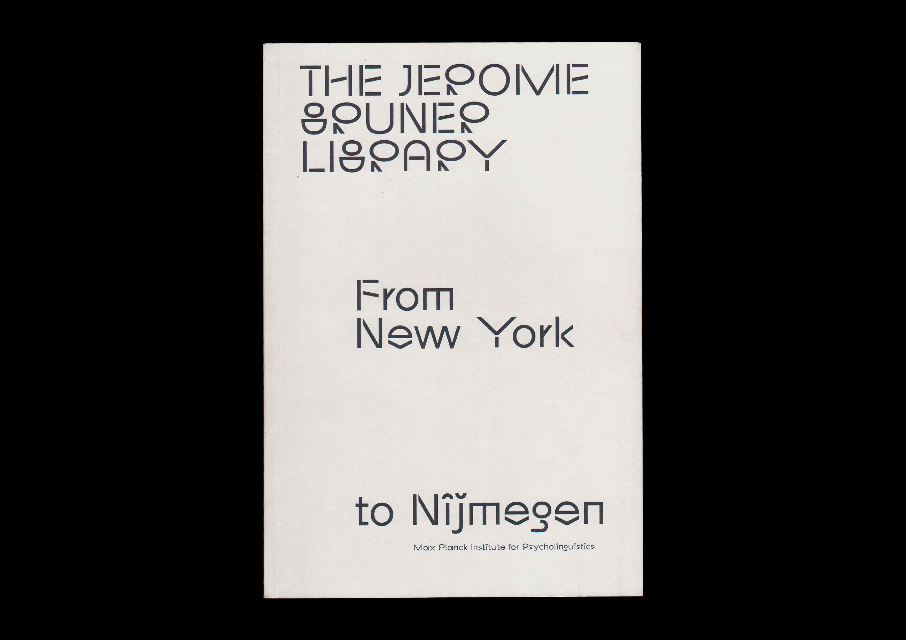
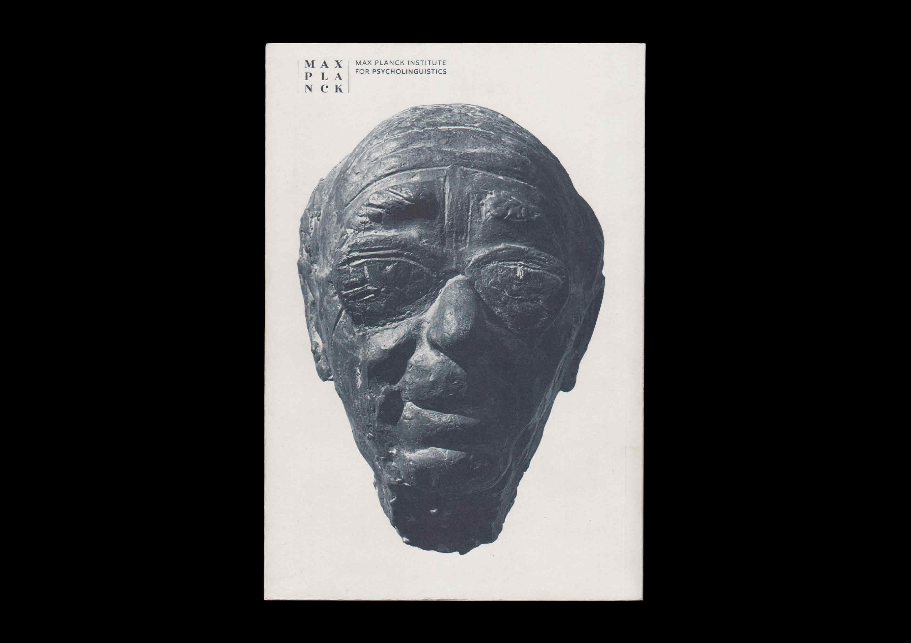
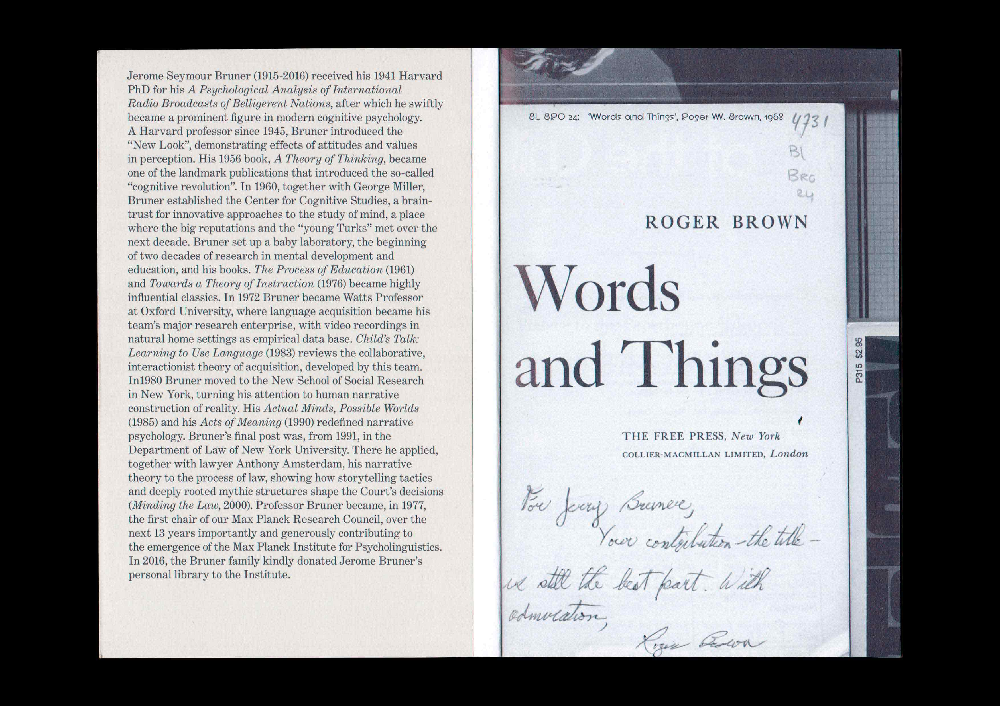

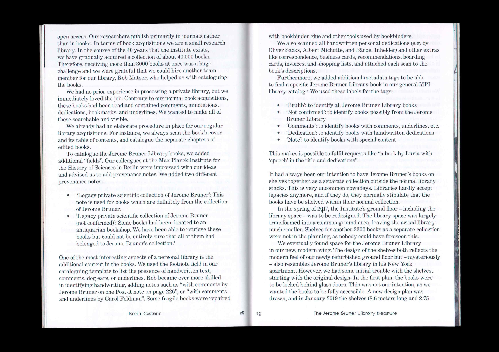
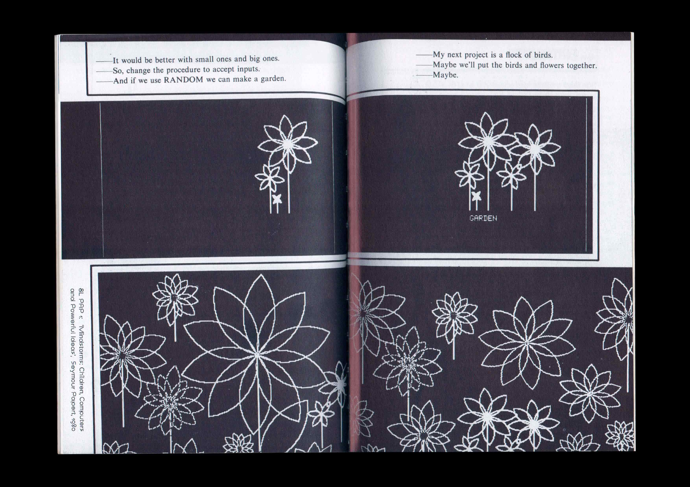
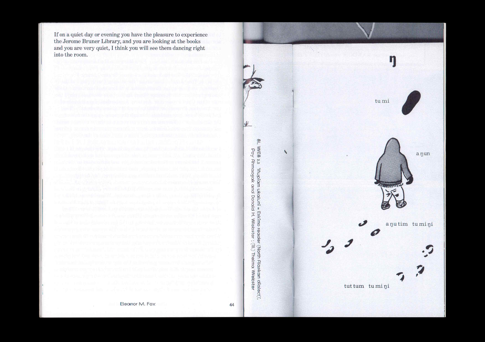
The Jerome Bruner Library: From New York to Nijmegen. Published by the Max Planck Institute for Psycholinguistics to commemorate the American psycholinguist Jerome Bruner, and to inaugurate the donation of his personal library to the institute. Texts by Willem J.M. Levelt, Karin Kastens and Eleanor M. Fox. Display typeface by Orange Slice Type. 2020
Drawings and labels for Rodløs Cider. 2019–2022
© Mark Emil Poulsen and the authors, 2024


.jpg)


 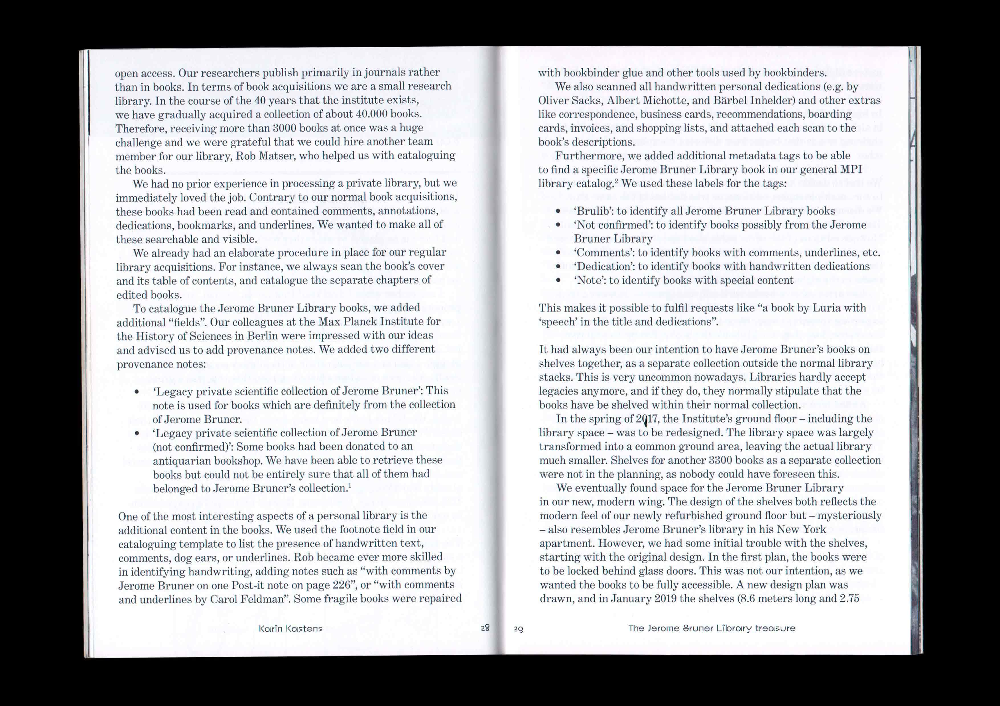
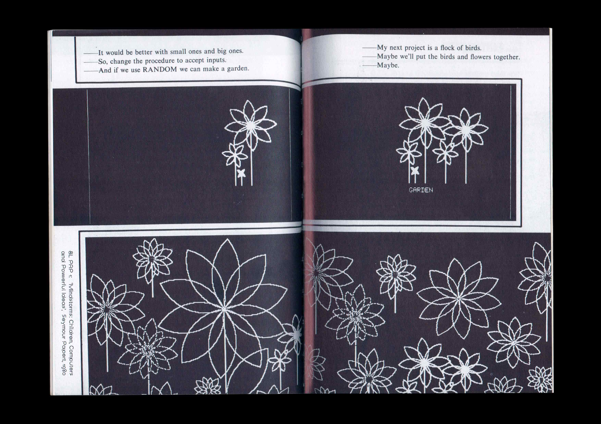
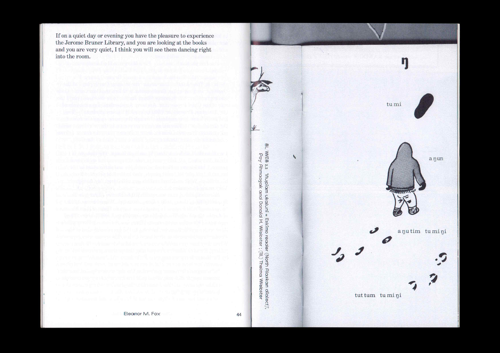
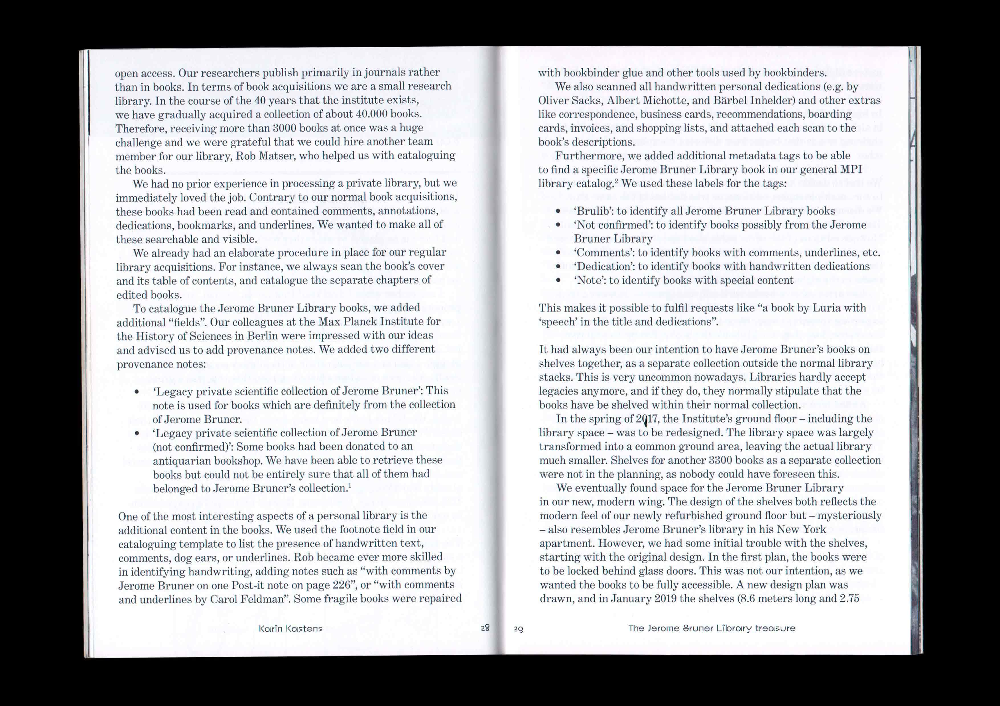
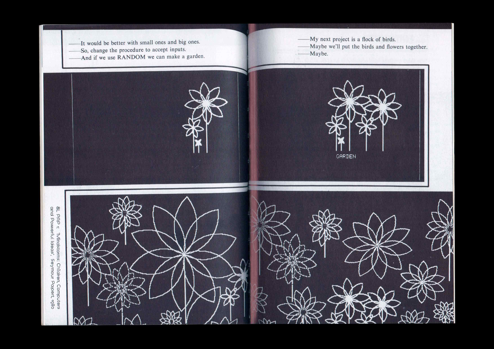
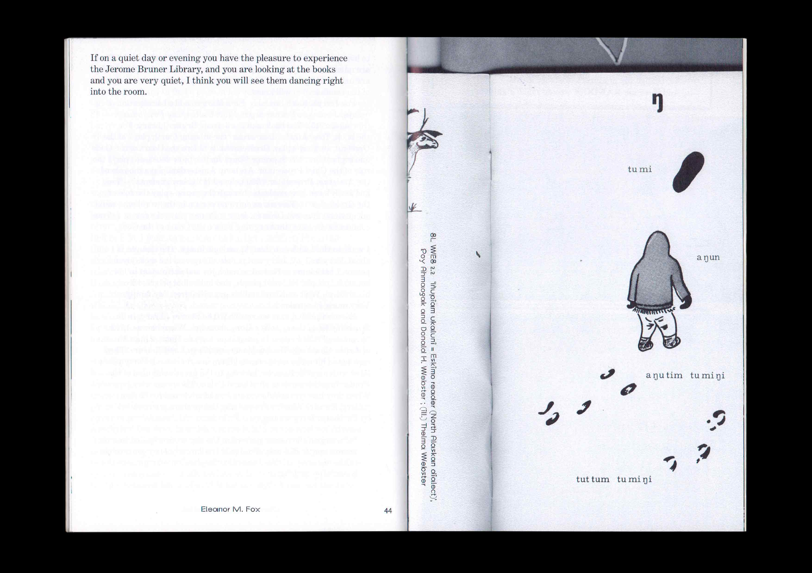